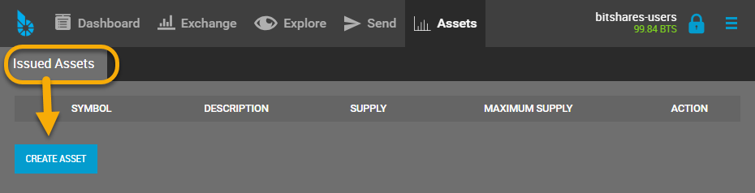
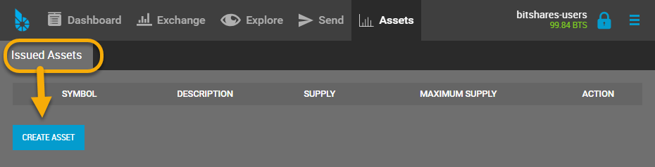
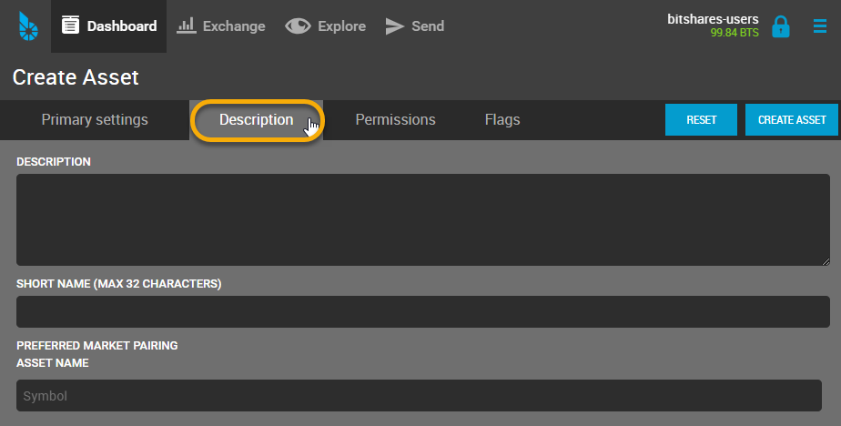

Creating a new UIA (GUI)¶
Table of Contents
Create Asset Feature¶
Go to [Settings] - [Create Asset]
- Click [CREATE ASSET]
 

{kind=link}
Primary Settings¶

To allow transaction fees to be paid in the native asset, a core exchange rate is required at which a customer can implicitly trade the UIA into BTS from the asset’s fee pool.
This also requires that the fee pool is funded (e.g. by the issuer). Since all prices in BitShares are internally represented as fractions (i.e. a/b), we need to define a ratio between quote (the UIA) and base (BTS), i.e. the numerator and denominator for price = a/b
| Symbol: | The Symbol defined here will be reserved in the system for your assets. One the asset is created, the symbol cannot be changed again. |
|---|---|
| Maximum Supply: | This is also a permanent setting and denotes the maximum amount of shares that can ever exist at the same time. Please consult the Networks fees in the explorer! |
| Number of Decimal Points: | |
| This is used to denoted the number of decimal places. A 0 will result in an asset that cannot be separated below integer amounts (e.g. 1, 2, ..) | |
| SmartCoin: | – |
| Quote Asset Amount: | |
| Core exchange rate | |
| Base Asset Amount: | |
| Core exchange rate | |
Note
Symbols with less than 5 characters are very expense. Please consult the Networks fees in the explorer!
Description¶
{kind=link}
| Description: | description can be used to let everyone know the purpose of the asset, or an internet address for further information. |
|---|---|
| Short Name: | Short Name is also a permanent setting and denotes the maximum amount. |
| Preferred Market Pairing: | |
| – | |
| Asset Name: | – |
Permissions (Optional)¶

Even though the default settings should be fine for most UIAs, we have the option to opt-out of some available features. (By default, or permissions are enabled).
Note
Once a permission has been set to false, the permission cannot be reactivated!
We have the options to opt-out of:
- Enabling Market Fees
- Requiring holders to be white-listed
- Issuer may transfer asset back to himself
- Issuer must approve all transactions
- Disable confidential transactions
Note
that setting these permissions does not imply that the features is enabled. To do so, we would also require to enable the corresponding flag(s). (See below)
Flags (Optional)¶
The flags are used to actually enable a particular features, such as market fees or confidential transfers.
If we have set the permission to have a market fee, we can enable the market fees here and set a percentage and max. fee.
We here also can enable the requirements for users to be white-listed, enable confidential transfers and give the issuer the power to withdraw its asset from customer accounts.

The asset creation fee¶
The asset creation fee depends on the length of your symbol. 3 Character Symbols are the shortest and are rather expensive while symbols with 5 or more characters are significantly cheaper.
50% of the asset creation fee are used to pre-fill the assets fee pool. From the other 50%, 20% go to the network and 80% go to the referral program. This means, that if you are a life-time member, you get back 40% of the asset creation fee after the vesting period (currently 90 days).
{kind=link}